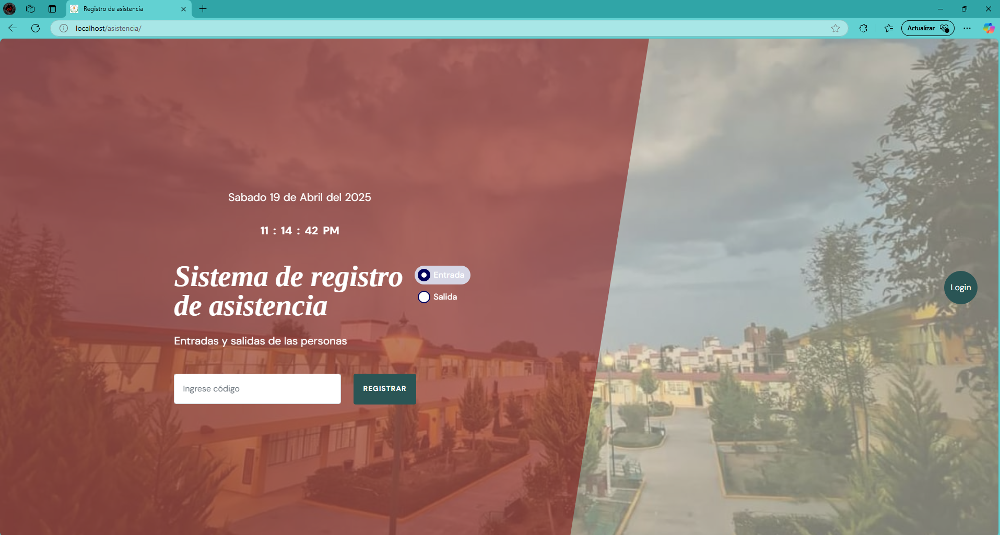
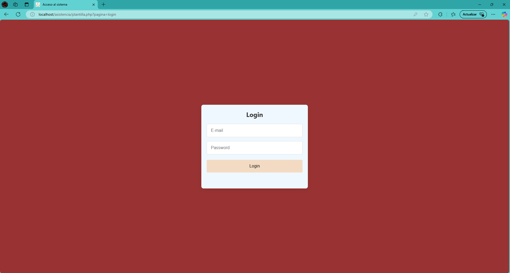
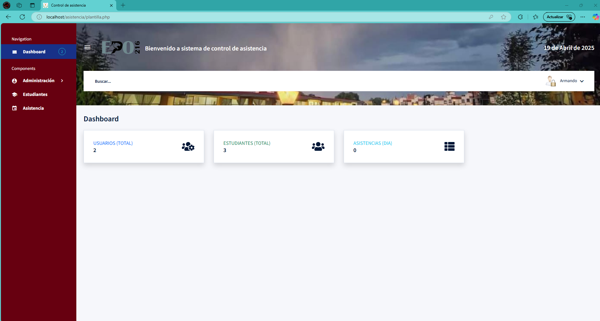
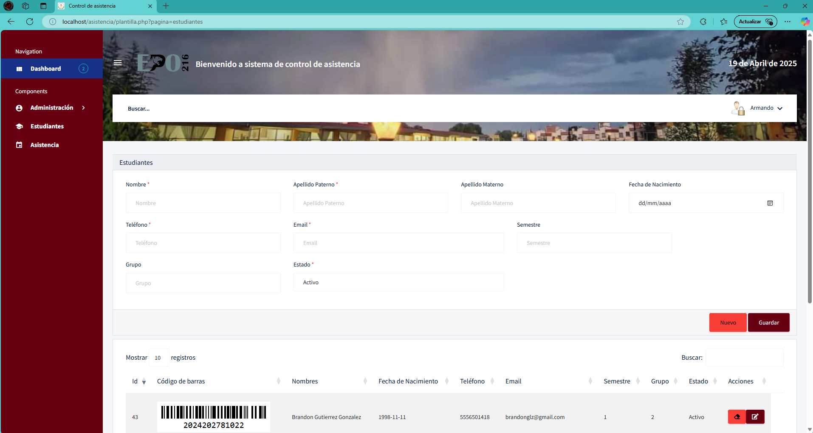
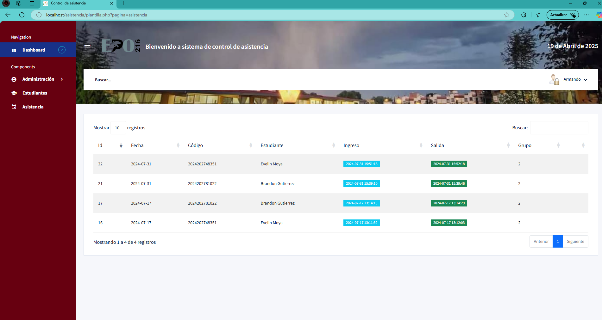
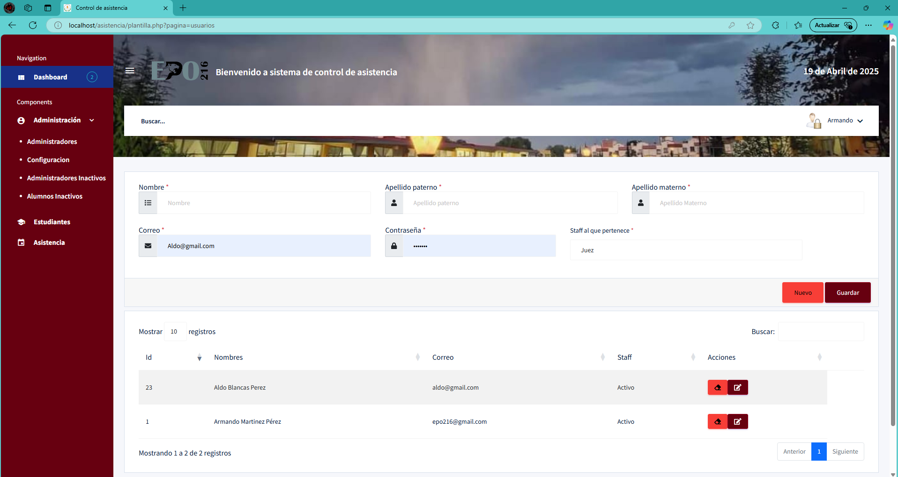
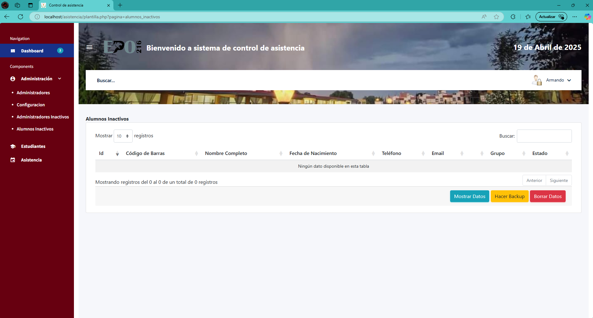

Sistema de Asistencia por Código de Barras
Desarrollé este sistema con el objetivo de facilitar el control de asistencia en eventos, instituciones o centros educativos. Los usuarios escanean su código de barras al entrar o salir, y el sistema registra la hora exacta, generando reportes automatizados de asistencia diaria.
Componentes del sistema
Galería del desarrollo

Pantalla de escaneo de código

Inicio de sesion

Menu principal

Formulario de registro de usuarios - Generación de códigos únicos

Reporte automático por fecha y hora

Panel del administrador

Backup de los datos
Tecnologías Utilizadas
- PHP + MySQL
- JavaScript
- HTML5 + CSS3
- Lector de código de barras vía teclado HID